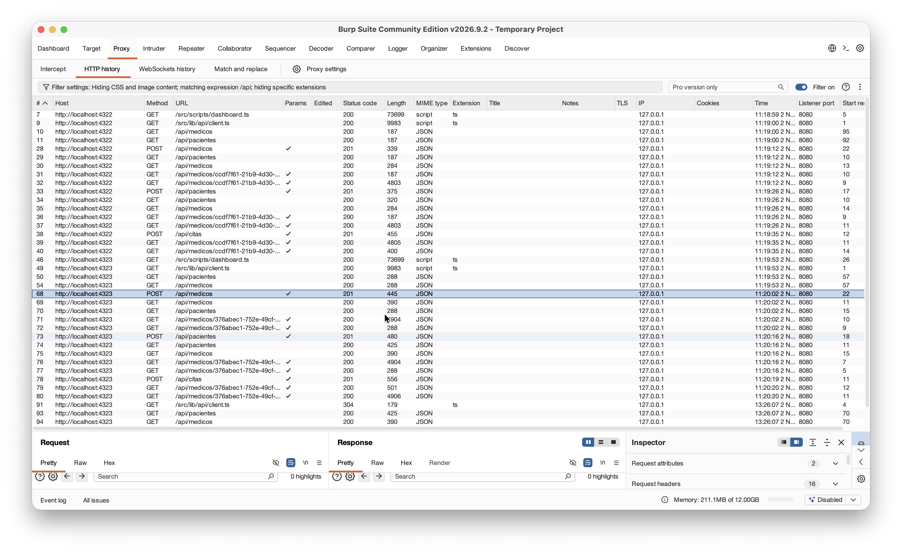
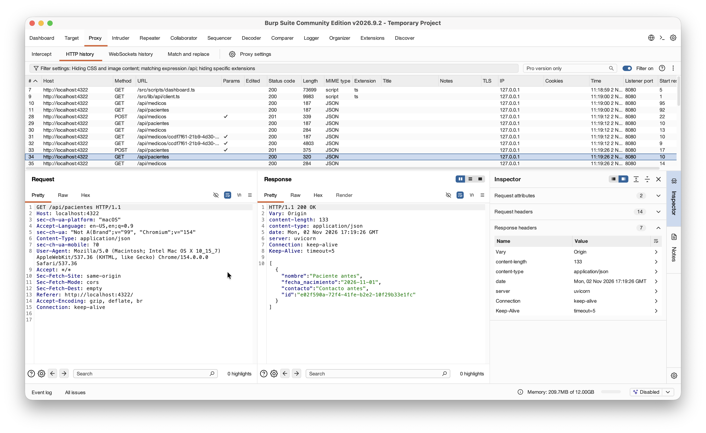
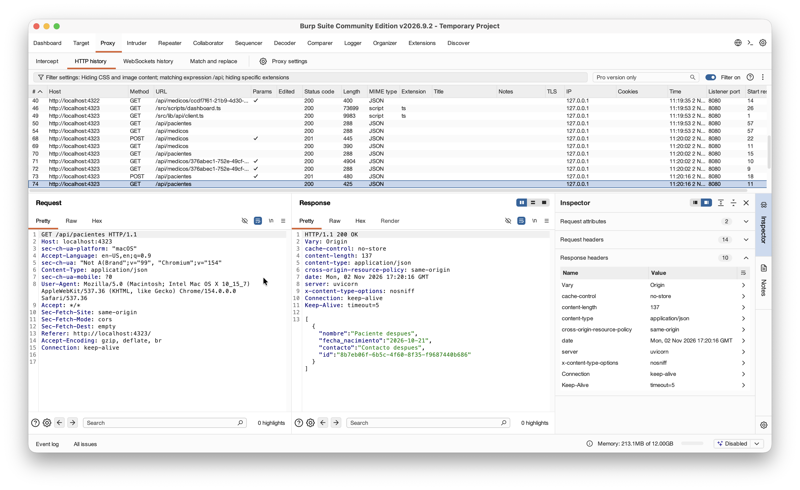
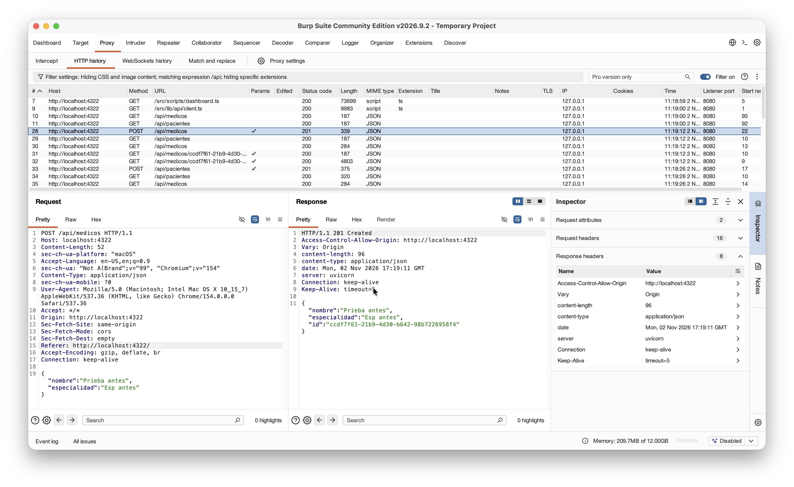
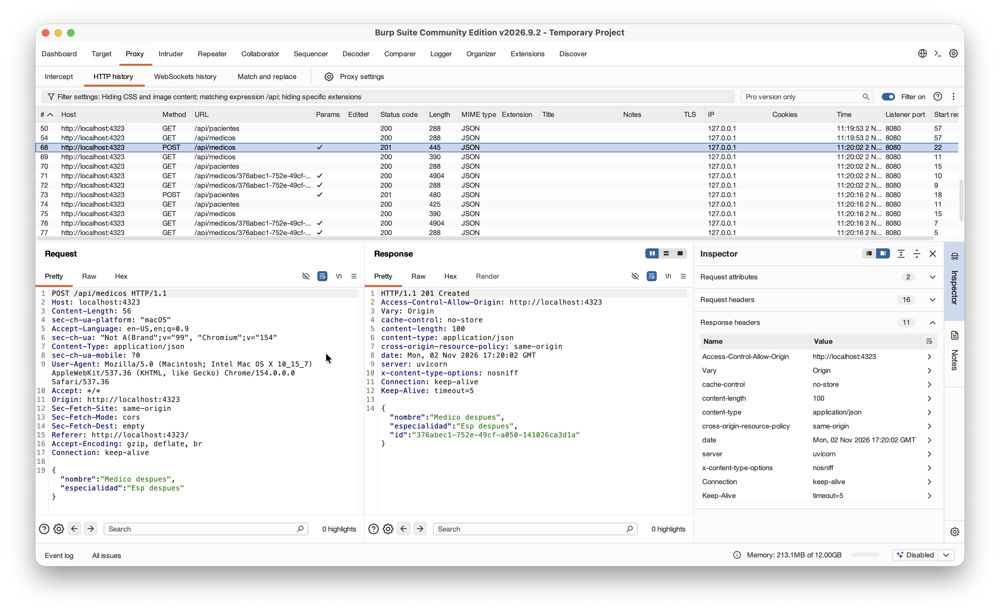

Informe técnico de seguridad
Análisis de tráfico con Burp Suite del Sistema de gestión de citas médicas
Comparación de las respuestas HTTP antes y después de las correcciones
| Autores | Eduardo Peniche, Gianina Casanova, Cesar Morales |
|---|---|
| Fecha del informe | 2 de noviembre de 2026 |
| Herramienta | Burp Suite Community Edition v2026.9.2 (proyecto temporal) |
| Método | Análisis manual del tráfico con el proxy y el navegador integrados de Burp |
| Objeto analizado | Frontend Astro y API FastAPI, en dos versiones del código |
| Informe relacionado | Análisis dinámico con OWASP ZAP |
Resumen ejecutivo
Este informe usa Burp Suite para confirmar los hallazgos H-01, H-02 y H-03 del informe de ZAP. Burp Community no tiene escáner automático. La confirmación se hace con tráfico real. Se compara la misma interacción en dos versiones del sistema.
La versión antes usa el commit af3b590, anterior a la corrección. La versión después usa el código de main en el commit 6dc41ad. En ambas versiones se ejecutó el mismo flujo desde la interfaz web. Burp registró las peticiones y las respuestas.
La versión anterior no envía ninguno de los tres encabezados de seguridad. La versión posterior envía los tres, en las respuestas de lectura y de escritura. Burp confirma la resolución de H-01, H-02 y H-03 con una herramienta distinta a ZAP.
Alcance y metodología
Capacidades de la edición Community
Burp Community incluye el proxy de interceptación, el historial HTTP y las herramientas manuales. No incluye el escáner de vulnerabilidades. Por esta razón los hallazgos de este informe salen de la lectura de las respuestas HTTP. Ninguna alerta la genera la herramienta.
Entornos comparados
| Versión | Código | Frontend | Backend |
|---|---|---|---|
| Antes | Commit af3b590 | localhost:4322 | localhost:8001 |
| Después | Commit 6dc41ad | localhost:4323 | localhost:8002 |
El archivo burp/compose.yml define los cuatro servicios. Los backends usan una base de datos temporal en memoria (tmpfs). Los datos de desarrollo no se tocan.
El frontend reenvía las llamadas /api/... al backend desde el servidor de Astro. Burp no ve esa segunda conexión. Burp registra la respuesta final que recibe el navegador. El proxy del frontend copia los encabezados del backend, así que la respuesta final los contiene.
Procedimiento
- Abrir el navegador integrado de Burp (Proxy → Open browser).
- Abrir el frontend de la versión antes (
localhost:4322). Crear un médico, un paciente y una cita. Listar médicos y pacientes. - Repetir el mismo flujo en el frontend de la versión después (
localhost:4323). - Filtrar el historial HTTP por
/api. Abrir cada petición y revisar la pestaña Response.
git archive af3b590:backend | docker build --target production -t clinica-backend:antes -
docker compose -f burp/compose.yml up -d --build
docker compose -f burp/compose.yml down -vResultados
Historial de peticiones
El historial contiene las peticiones de ambas versiones. La columna Host distingue la versión. Los hosts con el puerto 4322 son la versión antes. Los hosts con el puerto 4323 son la versión después.

/api.Comparación de encabezados de respuesta
| ID | Encabezado | Antes (4322) | Después (4323) | Estado |
|---|---|---|---|---|
| H-01 | X-Content-Type-Options | Ausente | nosniff | Resuelto |
| H-02 | Cross-Origin-Resource-Policy | Ausente | same-origin | Resuelto |
| H-03 | Cache-Control | Ausente | no-store | Resuelto |
| Petición | Código | Encabezados antes | Encabezados después |
|---|---|---|---|
GET /api/pacientes | 200 | 7 | 10 |
POST /api/medicos | 201 | 8 | 11 |
La diferencia es de tres encabezados en cada petición. Son los tres encabezados de seguridad.
Evidencia de la lectura de pacientes

GET /api/pacientes en la versión antes. La respuesta no incluye los tres encabezados.
GET /api/pacientes en la versión después. La respuesta incluye cache-control: no-store, cross-origin-resource-policy: same-origin y x-content-type-options: nosniff.Evidencia de la creación de médicos

POST /api/medicos en la versión antes. Respuesta 201 sin los tres encabezados.
POST /api/medicos en la versión después. Respuesta 201 con los tres encabezados.Observaciones adicionales
Estas observaciones no son hallazgos corregidos. Se documentan para completar el análisis.
| ID | Observación | Riesgo | Evidencia |
|---|---|---|---|
| O-01 | Ambas versiones envían el encabezado server: uvicorn. Revela el servidor de aplicación. No revela la versión. |
Informativo | Figuras 3 a 6 |
| O-02 | Las respuestas del frontend incluyen Access-Control-Allow-Origin con el origen de la petición. Las pruebas con curl muestran que el backend no envía este encabezado. El frontend lo envía solo si el origen es su propio localhost. Con el origen http://evil.example no lo envía. No hay un problema de CORS explotable. |
Informativo | Figuras 5 y 6, y pruebas con curl |
| O-03 | La página / del frontend no envía los encabezados de seguridad. Una consulta con curl a los puertos 4322 y 4323 no mostró X-Content-Type-Options, Cross-Origin-Resource-Policy ni Cache-Control. Esta observación corresponde al servidor de desarrollo de Astro. Un build de producción puede comportarse distinto. |
Bajo | Consulta con curl. No hay captura de Burp. |
Limitaciones del análisis
- Burp Community no incluye escáner. Este informe no busca vulnerabilidades de forma automática.
- El análisis cubre el flujo normal de la interfaz web. No incluye pruebas con Repeater ni con Intruder.
- La comparación confirma los hallazgos H-01, H-02 y H-03. No amplía la lista de vulnerabilidades de ZAP.
- El tráfico usa HTTP en
localhost. Las reglas de TLS no aplican. - La API no tiene autenticación. Burp lo muestra, porque las peticiones
POSTno llevan credenciales y reciben respuestas 201. Este punto ya aparece en las limitaciones del informe de ZAP.
Relación con el informe de ZAP
| ID | Hallazgo | ZAP | Burp |
|---|---|---|---|
| H-01 | X-Content-Type-Options ausente | Alerta 10021 antes. Sin alerta después. | Ausente antes. nosniff después. |
| H-02 | Cross-Origin-Resource-Policy ausente | Alerta 90004 antes. Sin alerta después. | Ausente antes. same-origin después. |
| H-03 | Contenido almacenable en caché | Alerta 10049 antes. Sin alerta después. | Ausente antes. no-store después. |
Las dos herramientas coinciden. ZAP detecta los hallazgos de forma automática. Burp muestra el mismo comportamiento en las respuestas reales que recibe el navegador.